1주차 L1~L3
Lecture 1. Introduction to Computer Vision
- Visual understanding
- 사람의 직관적인 인식(Intuition)을 컴퓨터로 구현하고자 하는것 → Function으로 만들기
- Video는 이미지 프레임들이 sequence, image는 RGB code의 coord구성이 sequence
- 하지만 단순 video contents 인식이 아니라 contents 내의 의도, 문맥, 의미를 파악할 수 있어야함.
- solution? ex. multimodal…
- Related works(Object recognition)
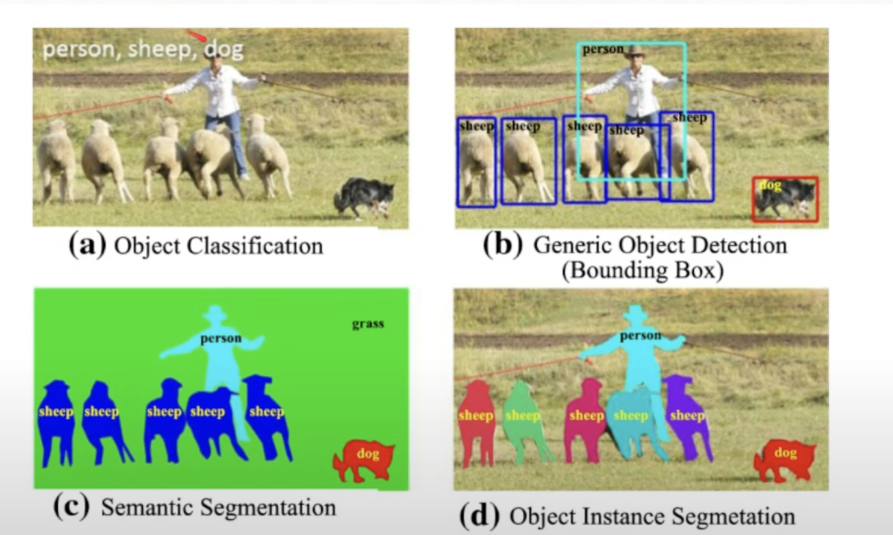
- Application
- Object recognition(Image classification)
- Action recognition
- Spatial& Temporal localization
- Segmentation
- Sementic: 단순 Object 영역 구분
- Instance segmentation: 영역 구분 + 같은 카테고리 내에서도 개별 object 구분
- Multimodal learning
- Image captioning: 이미지를 텍스트로
- Style transfer: 생성형
Lecture 2. First Approaches for Image Classification
Image Classification
- Single vs multi classification
- image classification에서의 챌린지
- scale, viewpoint, illumination이 다른 경우를 고려할 수 있어야한다 그리고 deformation(형태), occlusion(부분적으로만 볼 때 기존의 Context를 활용하거나 해서 object를 추측할 수 있어야한다), intraclass variation(class 정의의 범위?)
- 기존의 접근법
- 이미지에서 edge/corner를 추출한 시도들..
→ data-driven approach로의 전환 with 머신러닝 classification
Nearest Neighbor Classifier
- query data로 부터 가까운 k개의 neighbor를 지정해서 이 그룹의 label로 majority voting
- 이미지 간 유사성에 대한 정의
- Similarity function이 있으면 된다
- how?
- resizing해서 2D matrix 벡터 크기 일정하게 맞춘 후
- RGB int(0,255)로 채워진 matrix의 simiarity 측정
- Similarity(distance)
- L1 distance (sum,absolute difference,Manhattan distance)
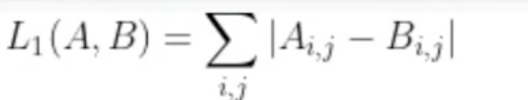
def predict(self, test_image): min_dist= sys.maxint for i in range(self.images.shape[0]): dist= np.sum(np.abs(self.images[i,:]-test_image)) if dist< min_dist: min_dist= dist min_index= i return self.labels[min_index] - L2 (squared,Euclidean distance)
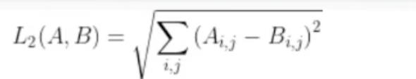
def predict(self, test_image): min_dist= sys.maxint for i in range(self.images.shape[0]): dist = np.sqrt(np.sum((self.images[i, :] - test_image) ** 2)) if dist< min_dist: min_dist= dist min_index= i return self.labels[min_index] - L1 vs L2 → decision boundary에 차이가 발생하나 큰 차이 없다고 함
- L1 distance (sum,absolute difference,Manhattan distance)
- Similarity(distance)
- Time complexity?
- training/prediction을 위한 time complexity가 어떻게 되나?
- training: O(1)
- prediction: O(n)
→ 효율적이지 않다
- kNN
- k값이 낮을 때 → 예측 범위가 늘어난다 하지만 오차를 고려해 generalize하기에 좋다
- hyperparameter 선택
- 내 데이터에서는 k값이 어느정도가 적절한가?
- distance는 어떻게 측정할 것인가?
- training을 하며 가장 성능이 좋은 hyperparameter를 선택한다
- kNN의 한계
- 1)
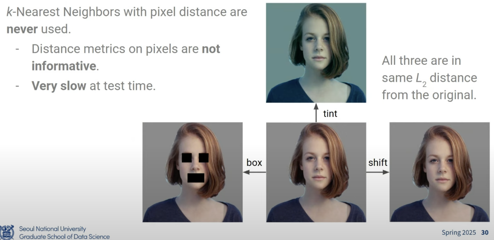
- 실제로는 오른쪽(한 픽셀씩 밀림)이 실제 이미지와 가장 유사하지만 L2 사용 시 왼쪽(마스킹)이 더 유사하다고 판단될 수 있음.
- 2) Curse of dimensionality
- 데이터 차원이 커질수록 지수만큼 비례하게 학습 데이터가 필요하다
Linear Classifier
- Parametric approach
- y= f(x) (where x= image, y= label)인 function을 만든다
- 여기서 f(x)의 계수들이 parameter
- y= f(x) (where x= image, y= label)인 function을 만든다
- Linear model
- 픽셀 들의 Weighted sum
- f(x,W)= Wx+b
- W의 크기 = label * input vector size → 각 픽셀이 n개의 label에 미치는 영향을 미치는지 표현
- b의 크기 = label *1 → 클래스(lable)별 기본 값 (e.g 학습 데이터 내 레이블 분포 정도?, 그래서 input x 자체와는 관련 없음)
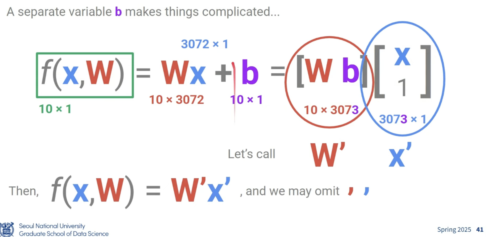
- ambiguous한 데이터에 있어서는 threshold를 사용하기도 한다
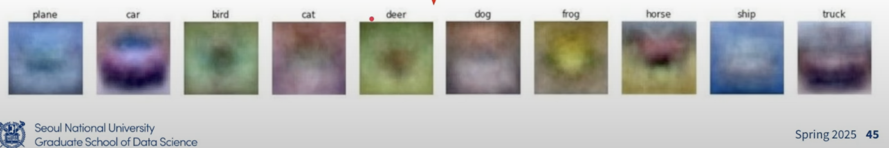
- Weight 값들로부터 RGB (0,255) scale로 맞춰서 학습한 패턴을 시각화한 결과
→ NN과 Linear classifier의 공통점?
Lecture 3. Loss Function & Optimization
Loss function
- y= Wx+b 에서, score의 의미는 무엇인가? 어떻게 해석할 것인가?
- gap을 모델링한다 (e.g \(s= s_1- s_2\)) → gap이 커질 수록 특정 class일 확률이 최대화되도록하는 함수를 만든다
- Sigmoid function
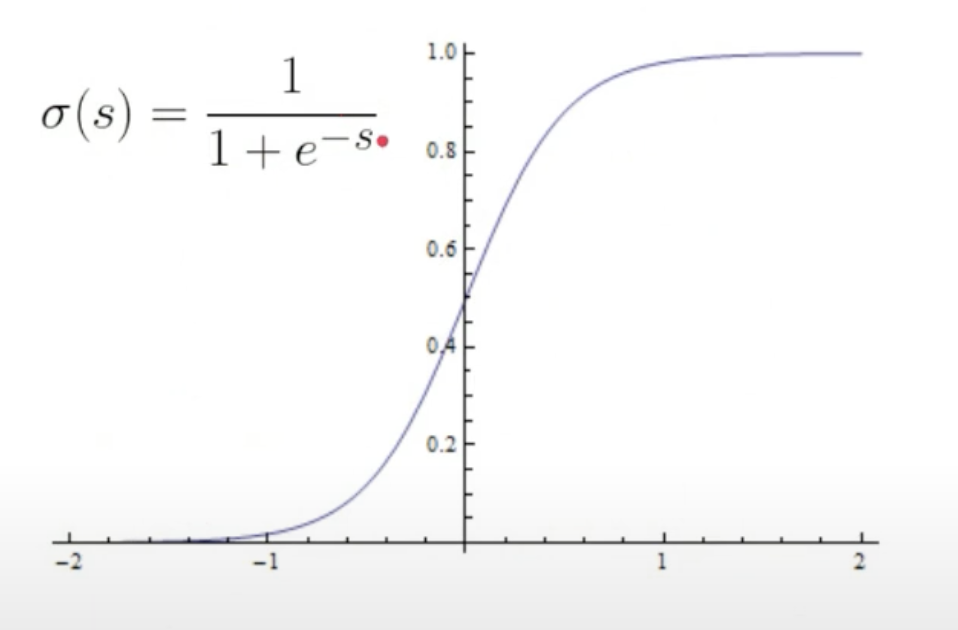
- Input(s) 커질 수록 ~1
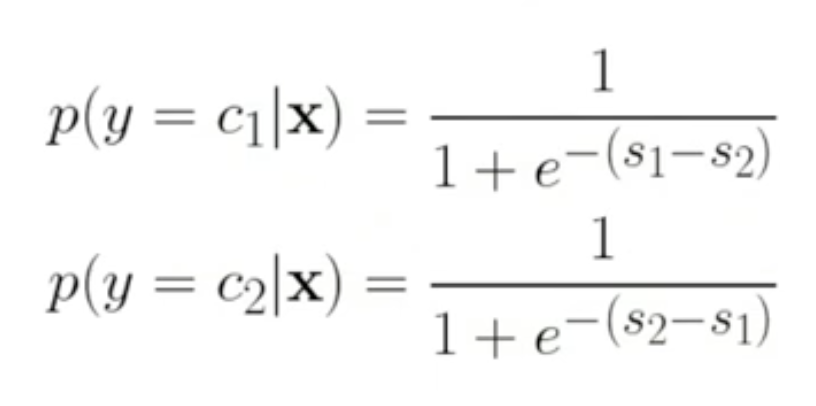
- class 확률에 대한 수식 표현
- 0≤ 각 확률 ≤1
→ \(p(y=c_1|x)+ p(y=c_2|x)=1\)
→ if n>2?
- 그래서 Softmax classifier의 output을 어떻게 받아들일 것인가
- 확률이 아닌 confidence 개념으로 봐야한다
- threshold에 활용한다
How to find the weights?
- sheme
- 모델의 형태를 정한다(e.g linear classifier ….)
- randomly initializing the Ws
- training data(x)를 주고 \(\hat{y}\) (예측치) 계산 - y → loss 계산 → Loss function사용
- Updating W → Optimization
Loss functions
- 현재 상태의 모델이 예측에 얼마나 우수한지 수치화
- \(L(\hat{y}, y)\)
- Binary Classification)
- 0 or 1 또는 -1 or +1 setting에서,
- Margin-based loss: \(\hat{y}y\) (다른 예측일 경우 -, 같으면 +, abs는 confidence)
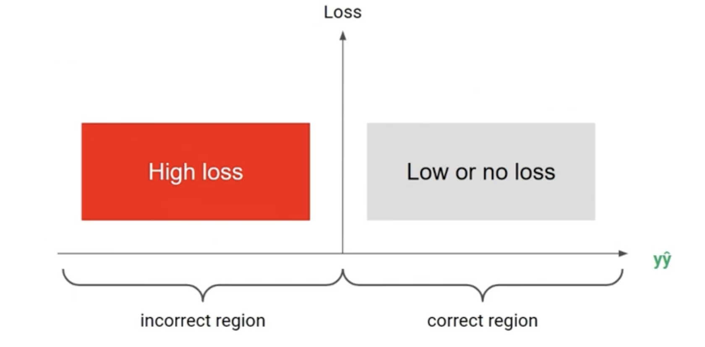
- 왼쪽(incorrect)로 페널티가 더 헤비하도록 모델링하면
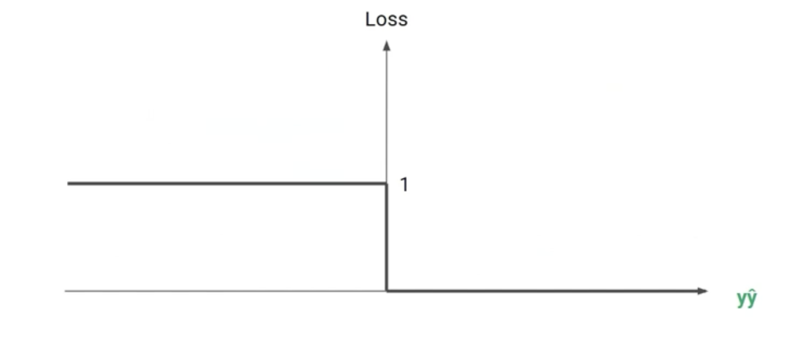
- 이렇게 구성할 수 있으나, x=0에서 미분 가능하지 않음
→ Margin-based loss
- Log loss
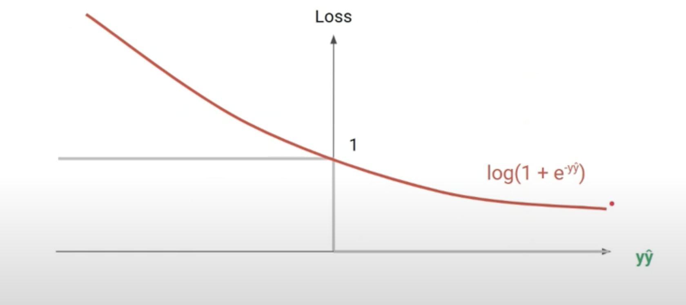
- Exponential loss (더 aggressive하다)
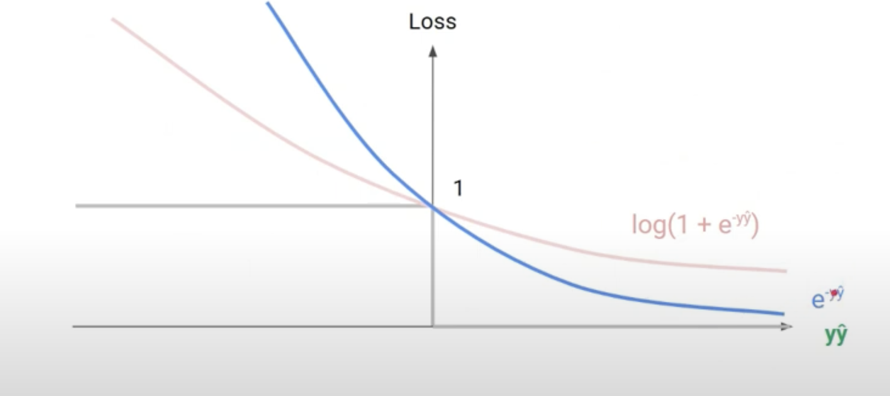
- 데이터가 noisy할 때 불안정한 학습이 있을 수 있음.
- Hinge loss( linear)
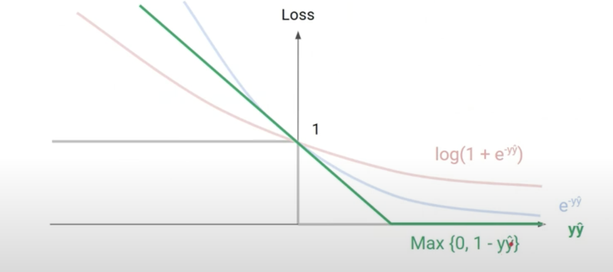
- SVM에서 많이 사용 ∵ 미분이 불필요해서 더 effiecient하다?
- Margin loss vs 0 loss
- 0-loss의 경우 정답과 오답 구분점에서 미분이 되지 않기 때문에 치명적이지만 Margin의 경우 임의의 포인트이기 때문에 보다 더 유연하다고 볼 수 있다?
- Probabilistic classification)
- \(y\)= one hot vector (e.g [ 0,0,0,0,1,0,0])
→
- Cross-entropy
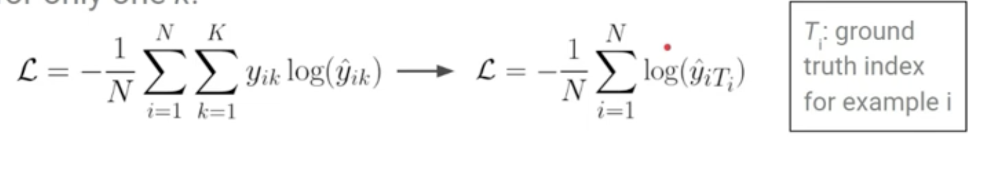
- where K= index of class i= index of image
- y_ik=1이 되는 i번째 클래스에 대한 특정 k의 인덱스 → \(T_i\)
- -log(\(\hat{y}\)\(T_i\))(실제 정답인 인덱스에서 해당 클래스에 대한 예측값의 -log, 두 확률분포의 비교값)의 평균 → log-loss 구현
- 1일수록 loss 감소
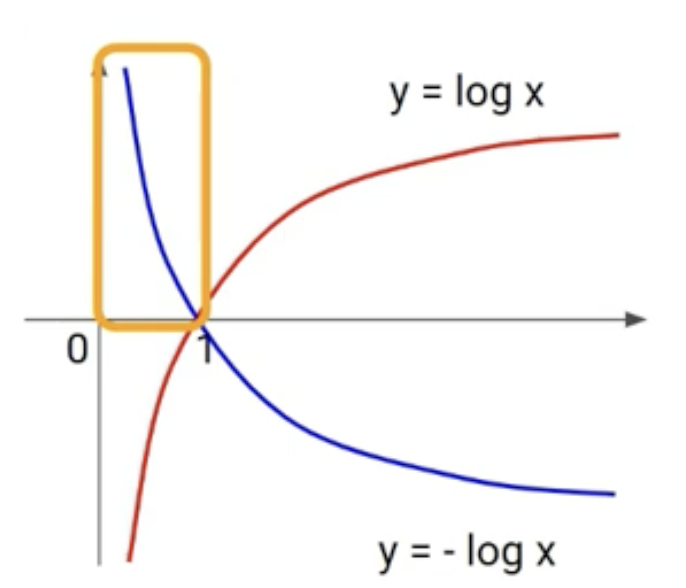
- KL(Kullback-Leibler) divergence
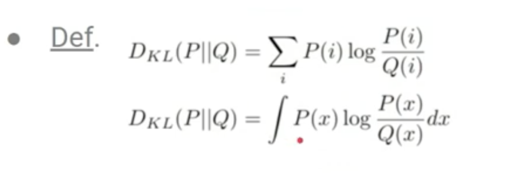
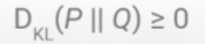
- 왜 distance가 아니라 divergence?
- P||Q 일 때와 Q||P일 때의 값이 동일하지 않음에 따라 distance의 개념이 성립하지 않음, 그래서 triangle inequality를 성립하지 않을 수 있음
Optimization
- Loss function을 최소화하는 지점을 찾자
- 가장 단순한 구조에서는 기울기가 0인 지점이 Global optimum일 것
theta = rand(vector) while true: theta_Grad = evaluate_gradient(J, data, theta) #J= cost func, alpha= size of movement theta= theta -alpah * theta_grad if (norm(theta_grad) <= beta) break
→ Potential Problem
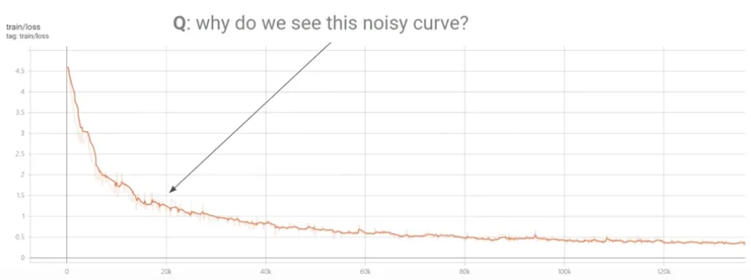
- minibatch subset을 가지고 학습을 했기 때문에, 일부 noisy한 패턴이 보일 수 있음
Cross validation
- generalization에 대한 평가
- test dataset은 절대 training되면 안된다~
- 2개의 필요한 test dataset
- 최종 성능 평가용
- validation set → hyper-parameter 조정용 → validation score가 가장 우수한 것으로 모델 최종 선택
- k-fold
- k개로 데이터셋 나누고 k-1/k 학습 + 1/k로 test → 평균
꼭 기억해야할 것들